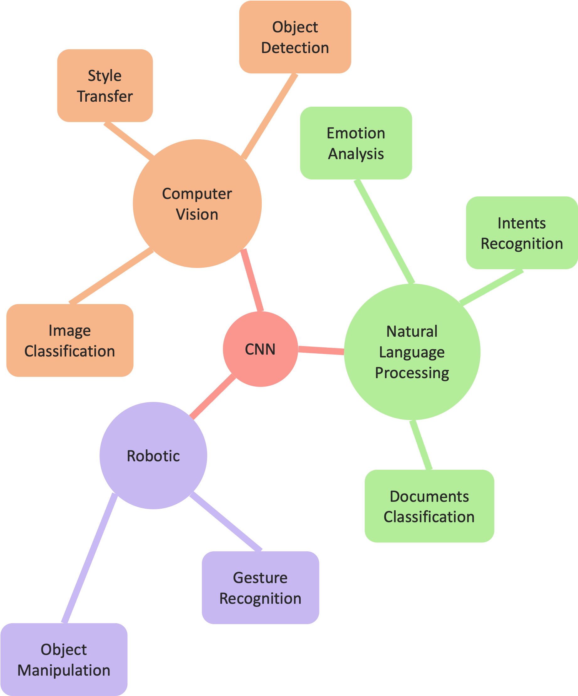

NLP for Academic Publication:
Finding Cross-disciplinary Connections
▪▪▫▫▫▫▫▫▫▫
- Focuses on using Natural Language Processing (NLP) to analyze academic publications
- Scans academicpublication to find intersections appear across different fields
- Offers insights into areas where researchers might collaborate or share resources
Academic Publication
- Books
- Newsletters & Journal
- Theses & Dissertations
- Conference Proceedings
- Posters
- Reviews
- Teaching Materials
- Patents
- Encyclopedia Entries
- Datasets
- Software & Code
Intersections
- Research Objectives
- Theoretical Framework
- Research Tools & Technologies
- Datasets
- Study Populations
- Challenges and Limitations
- Funding and Resources
- Historical Context
- Ethical Considerations
- Societal Impacts
Insights

Procedure
procedure 1
Content for procedure 1
procedure 2
Content for procedure 2
procedure 3
Content for procedure 3
procedure 4
Content for procedure 4
procedure 5
Content for procedure 5